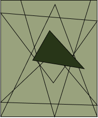
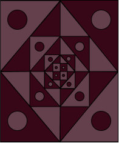

The Process
These are my three graphic compositions! I ended up using Figma to create the designs, which I found so much fun
as figma really allows you to create any kind of design.
The first step of the process was drawing out my designs in my sketchbook. Then to make it easier for myself I took
a photo of my drawings and uploaded them to figma. From there I turned the opacity down and drew over the designs.
For the colour palette I used some of my favourite colour combinations so that the compositions would reflect me
and my personal taste.
Final Compositions

